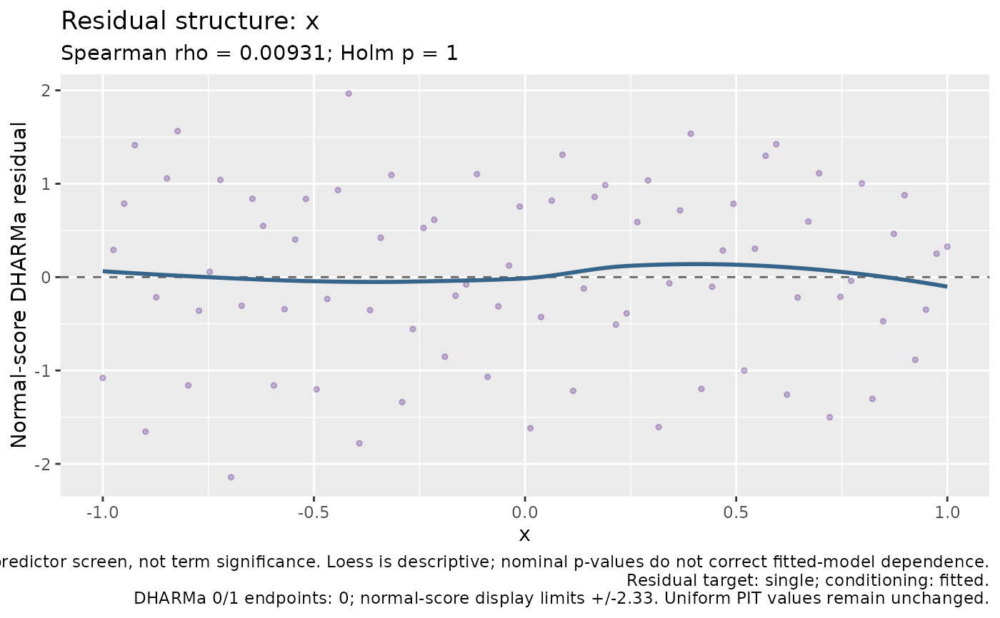

Combine native fitting evidence, available model statistics, optional simulation-based residual tests, and exploratory checks for every model term. The report does not refit or select the original model.
Usage
check_cpue(
model,
data = NULL,
year = NULL,
residuals = NULL,
simulate = TRUE,
terms = NULL,
nsim = 250L,
batch_size = 25L,
seed = 1L,
component = c("auto", "combined", "encounter", "positive"),
conditioning = "backend_default",
residual_method = c("dharma", "simulation_pit"),
residual_tests = NULL,
alpha = 0.05,
dharma_max_mb = 256,
trial_counts = NULL,
response_transform = "identity",
dharma_storage = c("auto", "disk", "memory")
)
# S3 method for class 'influ_check'
print(x, ...)
# S3 method for class 'influ_check'
summary(object, ...)
# S3 method for class 'influ_check'
as.data.frame(x, row.names = NULL, optional = FALSE, ...)Arguments
- model
A fitted GLM, GAM, glmmTMB, lme4, brms, sdmTMB, or single-response tinyVAST model.
- data
Original fitting data, with original row names. Supply it when raw predictors are unavailable in the saved model frame (for example,
poly(depth, 3)). Changed data fail alignment checks.- year
Original-data time column.
NULLusesinflu_residuals()time discovery. An explicit name must exist in the aligned data.- residuals
Optional precomputed native
influ_residuals()result from this same fit. Reuses all stored values and tests, without simulation or recalculating missing tests. Backend, response, and observation IDs are checked, but old objects cannot prove identical fitted parameters; the caller remains responsible for same-fit provenance.- simulate
Calculate residuals when none are supplied? Default
TRUE; useFALSEfor a quick native-fit/term-inventory report. Missing residual checks are recorded as"not_assessed", not passes. A hard numerical issue also prevents automatic residual simulation.- terms
Optional subset of exact recorded term names.
NULLincludes every term. Interaction, auxiliary-component, and latent-process terms remain visible even when no valid univariate residual screen is available.- nsim, batch_size, seed, component, conditioning, dharma_max_mb, trial_counts, response_transform, dharma_storage
Passed to
influ_residuals()for new calculations. No MCMC or original model refit is run. Compact DHARMa calculations default to bounded response blocks and a temporary disk cache;dharma_max_mbis a response-workspace budget, not a process-wide memory bound. Component selection is explicit for joint models.- residual_method
Residual engine for a new report:
"dharma"(the checker default, requiring optional DHARMa >= 0.4.7) or"simulation_pit". This does not change the default ofinflu_residuals(). There is no silent fallback if an engine, family, or conditioning target is unavailable.- residual_tests
DHARMa-reference test set for new calculations:
"none","standard", or"full".NULLselects"standard"for DHARMa and"none"for simulation PIT. Full adds auxiliary quantile regressions and outlier tests, with additional computation, but no original-model refits.- alpha
Exploratory flag threshold, default 0.05. Term-screen p-values are Holm-adjusted across the calculated raw-predictor screens. Native DHARMa within-year p-values use their separately recorded Holm family; there is no universal correction across all different diagnostic questions.
- x, object
An `influ_check` report.
- ...
Further arguments to printing or residual plotting methods.
- row.names
Optional output row names.
- optional
Passed to the data-frame method; retained for the standard [base::as.data.frame()] signature.
Value
A compact S3 influ_check object, with model_statistics,
overall, term_checks, term_inventory, residuals, predictors, and
metadata. base::summary() returns report tables; base::as.data.frame() combines
all checks. plot(report) reuses the residual overview, and
plot(report, type = "term", term = "depth") displays a retained raw
predictor alongside its exploratory screen. Reports without residuals
can still display the status table using type = "status".
Details
model_statistics contains available native sample size, likelihood
degrees of freedom, log-likelihood, AIC, BIC, and deviance. Native GLM/GAM
explained deviance and GAM adjusted R-squared are labelled separately;
Bayesian R-squared is reused only when already stored. Missing quantities
are NA, not fabricated or calculated by fitting a null model. Likelihood
criteria are descriptive here: unlike table_criterion(), this function
does not establish comparability between different fits.
Overall native checks distinguish numerical fitting issues from unavailable
evidence. Term screens use uniform-scale PIT ranks: Spearman rho for a raw
numeric predictor, or Kruskal-Wallis rank/location comparisons for adequately
sampled categories. These are not DHARMa tests, coefficient-significance
tests, tests of random-effect variance, or automatic term-removal rules.
A raw-predictor check for poly(x, 3) is not a test of each polynomial
coefficient. Native GAM smooth EDF/statistics are reported separately, not
classified as residual failures. Joint/latent structures requiring an
explicitly defined dependence check are reported as unassessed.
Optional uniformity/year/quantile tests use genuine DHARMa vector interfaces.
Disk-based dispersion and outlier tests use labelled bounded-memory
equivalents; dharma_storage = "memory" calls native object-based tests.
The compact report retains statistics, implementation sources, and
metadata, not that object's response matrix, the fitted model, or formula
environments. Plotting and printing never repeat tests or consume RNG.
Supplied residuals are compacted even if their original object retains
native DHARMa simulations. Caller RNG is preserved during calculation.
"issue" denotes a numerical fitting problem; "review" denotes evidence
worth inspecting; "no_flag" means only that the particular screen did
not flag; "not_assessed" is unavailable/inapplicable-to-current-data
evidence; and "not_applicable" denotes a genuinely irrelevant check or
descriptive fitted-effect statistic. There is no overall model-pass flag.
Correlation, fitting, posterior-data reuse, and simulation conditioning can
invalidate nominal test calibration. A combined-response check does not
validate encounter or positive components separately. No rotation, OSA,
model-specific false-positive calibration, or hidden refitting is applied.
Examples
d <- data.frame(year = factor(rep(2010:2013, each = 20)),
x = seq(-1, 1, length.out = 80))
d$y <- rep(0:3, length.out = 80)
fit <- glm(y ~ year + x, family = poisson(), data = d)
report <- check_cpue(fit, simulate = FALSE)
report
#> CPUE model check (GLM)
#> Overall model statistics:
#> backend nobs df df_residual logLik AIC BIC deviance
#> GLM 80 5 75 -119.7865 249.5731 261.4832 87.46207
#> deviance_explained adjusted_R2 bayes_R2 bayes_R2_sd
#> 0.02791429 NA NA NA
#> method
#> Native descriptive likelihood statistics; backend-specific deviance, not cross-backend adequacy or ranking
#> notes
#>
#>
#> Overall checks:
#> check status statistic p_value p_adjusted
#> convergence no_flag NA NA NA
#> boundary no_flag NA NA NA
#> finite_coefficients no_flag 0 NA NA
#> finite_uncertainty no_flag 0 NA NA
#> gradient not_applicable NA NA NA
#> residual_tests not_assessed NA NA NA
#>
#> Model-term checks:
#> term component check status statistic df p_value
#> year conditional residual_structure not_assessed NA NA NA
#> x conditional residual_structure not_assessed NA NA NA
#> p_adjusted
#> NA
#> NA
#>
#> No flag is not proof of adequacy; unavailable checks are not passes.
#> Use summary() for methods, limitations, and suggested follow-up.
summary(report)$model_statistics
#> backend nobs df df_residual logLik AIC BIC deviance
#> 1 GLM 80 5 75 -119.7865 249.5731 261.4832 87.46207
#> deviance_explained adjusted_R2 bayes_R2 bayes_R2_sd
#> 1 0.02791429 NA NA NA
#> method
#> 1 Native descriptive likelihood statistics; backend-specific deviance, not cross-backend adequacy or ranking
#> notes
#> 1
# \donttest{
if (requireNamespace("DHARMa", quietly = TRUE)) {
report <- check_cpue(fit, nsim = 50, seed = 42)
plot(report)
plot(report, type = "term", term = "x")
}

# }